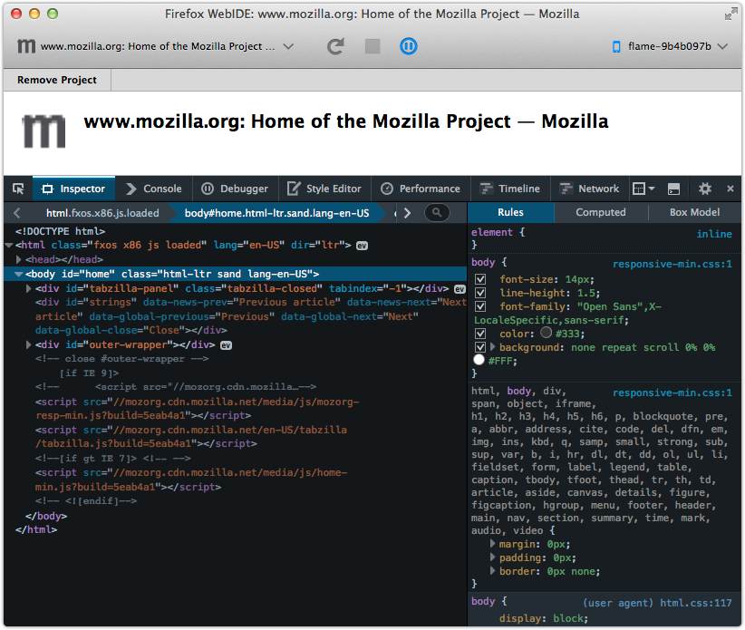
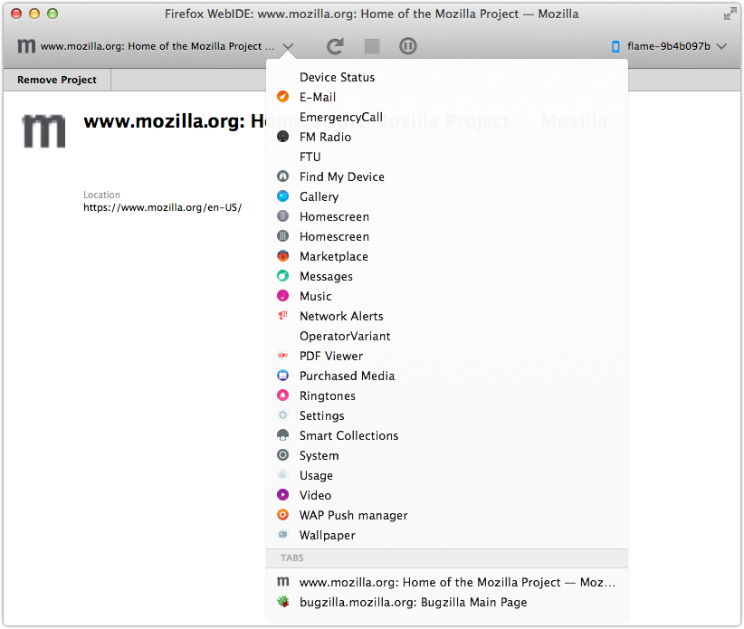

We’ve had various tools for inspecting apps on remote devices for some time now, but for a long time we’ve not had the same support for remote browser tabs.
To remedy this, WebIDE now supports inspecting browser tabs running on Firefox OS devices.

A few weeks back, WebIDE gained support for inspecting tabs on the remote device, but many of the likely suspects to connect to weren’t quite ready for various reasons.
We’ve just landed the necessary server-side bits for Firefox OS, so you should be able try this out by updating your device to the next nightly build after 2014-10-14.
How to Use
After connecting to your device in WebIDE, any open browser tabs will appear at the bottom of WebIDE’s project list.

The toolbox should open automatically after choosing a tab. You can also toggle the toolbox via the “Pause” icon in the top toolbar.
What’s Next
We’re planning to make this work for Firefox for Android as well. Much of that work is already done, so I am hopeful that it will be available soon.
If there are features you’d like to see added, file bugs or contact the team via various channels.